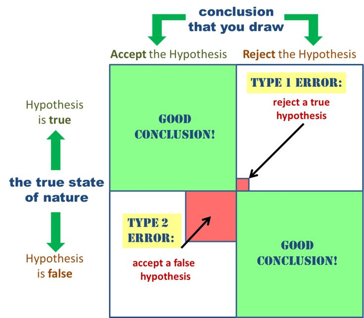

̂ : HAT over a letter means PREDICTED value of that variable.
̅ : BAR over a letter means AVG of that variable.
Population parameters (μ, σ etc.) and sample statistics (x̅, s etc.) use DIFFERENT symbols.
Outliers: The numerical rule for designating outliers is to calculate 1.5 times the interquantile range (IQR) and then call
a value an outlier if it is more than 1.5 × IQR below the first quantitle or 1.5 × IQR above the third quantile, some
computer output shows two level of outliers---mild (between 1.5 IQR and 3 IQR) and extreme (more than 3 IQR).
(Barron's AP Statistics, 9ed, P63,P73).
Distribution Comparison: shape, outliers(unusual values), center and spread (SOCS or CUSS).
a "discovery" occurs when a test rejects the null hypothesis. In the medical literature a discovery is called a "positive result".
So a "false positive" is a "false discovery".
Week 3 Normal Approximation and Binomial Distribution, Sampling Distributions and the Central Limit Theorem
The Empirical Rule
If the data follow the normal curve, then (1) about 2/3 (68%) of the data fall within one standard deviation of the mean, (2) about 95%
fall withing 2 standard deviations of the mean, (3) about 99.7% fall within 3 standard deviations of the mean.
Sampling Distributions
Distributions describe variability! There are three kinds of distribution:
a population distribution: μ, σ (variability in an entire population),
a sample distribution: x̅, s (variability in a particular sample), and
a sampling distribution: μ, SE(x̅)/SE(Sn) /SE(p̂) (variability among sample means/sums/percentages).
parameter, statistic, sampling distribution (SE of sampling means/sums/percentages), unbiased
Population parameters μ and σ are fixed quantities for a population. The sample mean x̅ and sample standard deviation
s are examples of statistics. Statistics are used to make inferences about population parameters, statistics vary depending on the
particular sample chosen. The probability distribution showing how a statistic varies is called a sampling distribution. The sampling
distribution is unbiased if its mean is equal to the associated population parameter. A sampling distribution is not the same thing as the
distribution of a sample.
SAMPLING DISTRIBUTION OF A SAMPLE MEAN
The sampling distribution of random variable x̅ has mean μ，standard deviation σx̅ and standard
error SE(x̅n).
SAMPLING DISTRIBUTION OF A SAMPLE SUM
The sampling distribution of random variable Sn=nx̅n has mean nμ, standard deviation
and standard error SE(nx̅n).
SAMPLING DISTRIBUTION OF A SAMPLE PROPORTION
The sampling distribution of random variable p̂ has mean p, standard deviation σp̂ and standard error
SE(x̅n × 100%).
SAMPLING DISTRIBUTION OF A DIFFERENCE BETWEEN TWO INDEPENDENT SAMPLE PROPORTIONS
The sampling distribution of random variable p̂1-p̂2 has mean p1-p2, standard
deviation σd=√(σ12+σ22) and standard error
SE(p̂1-p̂2).
SAMPLING DISTRIBUTION OF A DIFFERENCE BETWEEN TWO INDEPENDENT SAMPLE MEANS
The sampling distribution of random variable x̅1-x̅2 has mean μ1-μ2, standard
deviation σx̅1-x̅2 and standard error SE(x̅1-x̅2).
Difference between standard deviation σ and standard error SE: With proportions and means we typically do not know population parameters. So
in calculating standard deviations σ of the sampling models, we actually estimate using sample statistics. In this case, we use the term
standard error (SE) instead of standard deviation σ.
The Expected Value, Standard Error (SE)
The standard error (SE) of a statistic tells roughly how far off the statistic will be from its expected value (population mean). --- SE is an estimate of
the discrepancy of a sample statistic to the population parameter。
So the SE for a statistic plays the same role that the standard deviation σ plays for one observation drawn at random.
Notice that the SE of a sample mean, the SE of a sample sum (count) and the SE of a sample percentage are different.
SE of sample mean: $$SE(\overline x_n ) = {s \over\sqrt{n}} \label{ref1}$$
Standard deviation of sample mean: $$\sigma _{\overline x_n} = {\sigma \over {\sqrt n}}$$
SE of sample sum (count): $$SE(S_n) = SE(n\overline x_n) = {\sqrt{n}s}$$
SE of sample proportion/percentage: $$SE({S_n \over n} \times 100\% ) = SE(\hat p \times 100\%) = \sqrt{\frac {\hat p(1-\hat p)}n} \times 100\%$$
Standard deviation of sample proportion: $$\sigma_{\hat p} = \sqrt{\frac {p(1-p)}n} \times 100\%$$
SE of a difference between two independent sample proportions: $$SE(\hat p_1-\hat p_2) = {\sqrt{\frac{\hat p_1(1-\hat p_1)}{n_1} + \frac{\hat p_2(1-\hat p_2)}{n_2}}}$$
Standard deviation of two sample proportions difference: $$\sigma _{\hat p_1-\hat p_2}= {\sqrt{\frac{p_1(1-p_1)}{n_1} + \frac{p_2(1-p_2)}{n_2}}}$$
SE of a difference between two independent sample means: $$ SE(\overline x_1-\overline x_2) = {\sqrt{\frac{s_1^2}{n_1} + \frac{s_2^2}{n_2}}}$$
Standard deviation of two sample means difference: $$ \sigma _{\overline x_1-\overline x_2} = {\sqrt{\frac{\sigma_1^2}{n_1} + \frac{\sigma_2^2}{n_2}}}$$
Sampling Distribution of a Statistic
There are three histograms that are easily get confused: (1) the empirical histogram shows the observed data, (2) the probability histogram
of statistic shows the sampling distribution of statistic, (3) the probability histogram for producing the data shows what the chances are
for simulating.
The Law of Large Numbers
According to equation (\ref{ref1}), the standard error of sample mean, goes to zero as the sample size n increases. Therefore the sample mean
will likely be close to its expected value μ if the sample size n is large. This is the law of large numbers. Keep in mind that the law of
large numbers applies
for averages and therefor also for percentages, but not for sums as their SE increases
for sampling with replacement from a population, or for simulating data from a probability histogram
more advanced version of the law of large numbers state that the empirical histogram of the data will be close to the probability histogram.
If the sample size n is large.
The Central Limit Theorem
The larger the sample size, the more the sampling distribution (probability distribution of the sample means) looks like a normal distribution.
Week 4 Regression
Correlation
Correlation Coefficient
$$r = {{1\over {n-1}} \Sigma _i^n {(x_i-\overline x) \over {s_x}}{(y_i-\overline y) \over {s_y}}}$$
Note that the formula is actually the sum of the products of the corresponding z-scores divided by 1 less than the sample size n.
Keep in mind that Correlation Coefficient is only useful if the relationship appears roughly linear. It should be stressed that a correlation at or
near zero doesn't mean there isn't a relationship between the variables; there may still be a strong non-linear relationship. Also remember
that correlation does not mean causation.
Coefficient of determination
r2 is the ratio of the variance of the predicted value to the variance of the observed value y. That is, there is a partition of the
y-variance, and r2 is the proportion of this variance that is predictable from a knowledge of x. How large a value of r2
is desirable depends on the application under consideration. While scientific experiments often aim for an r2 in the 90% or above range,
observational studies with r2 of 10% to 20% might be considered informative.(These two points together is exactly what confuses people
a lot.)
Least Square Regression line
$$ \hat y - \overline y = b_1(x-\overline x)$$
The slope of the Least Square Regression line can be determined from the formula $$b_1 = {r {{s_y}\over {s_x}}}$$
That is each standard deviation change in x results in a change of r standard deviations in y.
We can rewrite the regression line as $$ {{\hat y -\overline y} \over {s_y}} = r{{x-\overline x} \over {s_x}} \Rightarrow z_y = rz_x \label{ref7}$$
Note that only with Standardized z-scores (zx, zy), the correlation coefficient r is the slope of the regression
line. Which variable is x and which variable is y matter, we cannot change x, y without change the slope.
It is also important to understand that even if a linear model is appropriate, it may still be weak with a low correlation coefficient. And,
alternatively, even if the residual plot shows a non perfect linear relationship,
with high r2, the linear model still might be a good model for the problem at hand.
Inference in Regression
Regression to the mean (or: the regression effect) is simply a consequence of there being a scatter around the regression line. Erroneously
assuming that this occurs due to some action is the regression fallacy.
Note that from formula (\ref{ref7}) Predicting y from x and x from y are different, there are two different regression line equations, don't
misuse one equation for two kinds of prediction.
Residual Plots, Heteroscedasticity, and Transformations
Note that order is important, residual equals observed minus predicted $$\hat e_i = y_i - \hat y_i$$
When plot y-residuals vesus x, if any trends present, it's not appropriate to use linear regression to predict y from x directly, transformations
of x or y are needed. If residuals open up, the residual scatter
is heteroscedastic, transformation of y variable is needed.
Week 5 Confidence Intervals, Tests of Significance
Confidence Intervals
Why confidence intervals not probability intervals? Because the population p or μ is a constant, and for a sample, the interval is
constructed and fixed also, so the population μ either falls into the interval or not, there are no chances involved, so confidence intervals
are used.
There is the success rate for the method, that is, the proportion of times repeated applications of this method would capture the
true population parameters. when the sampling process is repeated, then the sample means and confidence intervals corresponding to those
samples would be random, in which confidence intervals the population μ would fall into, if we label them 1-100, would be random also.
The bootstrap principle states that we can estimate σ by its sample version s and still get an approximately correct confidence interval.
Hypothesis Testing
The Null Hypothesis, H0, states that "nothing extrordinary is going on". ------ This is what the test assumes true first
and calculates based on for the following calculation, and the test would reject if data is not compatible with H0 according to the calculation.
The Alternative Hypothesis, HA, states that there is a different chance process that generates the data. ------ This is what decides
it's a one-sided test or two-sided test, and HA is a discovery, in medical area, a positive result is a
discovery, which is valuable.
Hypothesis testing proceeds by (1) collecting data (2) and evaluating whether the data are compatible with H0 or not (in which case (3) one
rejects H0), and accepts HA, thus has a new discovery.
Recall that a "discovery" occurs when a test rejects the null hypothesis. In the medical literature a discovery is
called a "positive result". So a "false positive" is a "false discovery".
Setting up a test statistic
A test statistic measures how far away the data are from what we would expect if H0 were true.
The most common test statistic is the z-statistic: $$z = {{observed - expected} \over {SE}}$$
'Observed' is a statistic (sample mean, sample count, percentage, sum, etc.) calculated from the data provided for assessing H0. 'Expected' and SE are the expected value and the SE of this statistic, computed under the assumption that H0 is true.
Large values of |z| are evidence against H0: The larger |z| is, the stronger the evidence, as |z| stands for the discrepancy between observed
value and expected value. p-value (or: observed Significance level): The p-value is the probability of getting a value of z as extreme or more extreme than the observed z, assuming
H0 is true.
But if H0 is true, then z follows standard normal distribution, according to the central limit theorem, so the p-value can be computed with normal
approximation. The smaller p-value is, the stronger the evidence is against H0. Often the criterion for rejecting H0 is a p-value
smaller than 5%. Then the result is called statistically significant. Alternative t-statistic for small samples.
Only when the sample size n > 20, we can estimate σ by s, when the sample size is small (n ≤ 20), then the normal curve is not a good enough
approximation to the the distribution of the z-statistic. Rather, an appropriate approximation is Student's t-distribution with n-1
degrees of freedom, then the flatter tails account for the additional uncertainty introduced by estimating σ by:
$$ s = {\sqrt{{1 \over {n-1}} \Sigma _{i=1}^n(x_i - \overline x)^2}}$$
For the test statistic: $$t=\frac {\overline x - \mu}{s/\sqrt n}$$ to have a t-distribution, we actually need that the sampling distribution of
x̅ is normal. This follows either (1) if the original population has a normal distribution or (2) if the sample size is large enough (from CLT).
In this case it is also better to replace the confidence interval:
$$\overline x \pm zSE$$ by $$ \overline x \pm t_{n-1}SE$$
Use the t-distribution with an SRS of size n and
(1) large n (≥40) : unnecessary to make any assumptions about parent population.
(2) medium n (15-40) : sample should show no extreme values and little, if any, skewness; or assume parent population is normal.
(3) small n (≤15): sample should show no outliers and no skewness; or assume parent population is normal.
Statistical Significance vs. Importance
Statistically significant does not mean that the effect size is important, as a large sample size n makes SE small, so even a small exceedence over the
normal value may give a statistically significant result. Therefore it is helpful to complement a test with a confidence interval.
There is a general connection between Confidence Interval (CI) and tests:
A 95% Confidence Interval contains all values for the Null Hypothesis that will not be rejected by a two-sided test at a 5% significance level. ------
only those values for the Null Hypothesis that are not in the Confidence Interval will be rejected by a two-sided test at a 5% significance level.
(A 5% significance level means that the threshold for the p-value is 5%).
Two types of errors
There are two ways that a test can result in a wrong decision:
H0 is true, but was erroneously rejected, and HA falsely accepted: Type I error ('False Positive', It is a false rejection
of a true hypothesis H0, and therefore a False Acceptance of HA.)
H0 is false, but we fail to reject it, and HA falsely Not accepted:: Type II error ('False Negative', It is the false
acceptance of an incorrect hypothesis, and therefore a False Not-Acceptance of HA.)
Rejecting H0 if the p-value is smaller than 5% means P(type I error) ≤ 5%.

Type I Error vs. Type II Error
Week 6 Resampling, Analysis of Categorical Data
Monte Carlo method
Bootstrap method
The Chi-Square Test for Goodness of Fit
The Chi-Square Test for Homogeneity and Independence
Week 7 One-Way Analysis of Variance (ANOVA)
The Analysis of Variance F-Test
Week 8 Multiple Comparisons
Data snooping: significant only by chance
replicability: getting similar conclusions with different samples, procedures and data analysis methods.
reproducibility: getting the same results when using the same data and methods of analysis.
Multiple testing fallacy or look-elsewhere effect
Bonferroni Correction:
False Discovery Proportion (FDP)
False Discovery Rate (FDR): Benjamini-Hochberge procedure to control the FDR at level α